|
My Profile<3 |
|---|
|
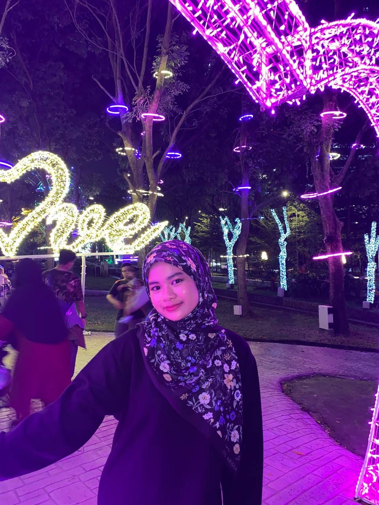
My name is Nur Farah Anis binti Shahar . I am 20 years old. I was born at Port Dickson, Negeri Sembilan. I have family of nine. I have seven siblings in my family. 5 boys and 2 girls. And my parents to include. Currently, I studying at UiTM Rembau as a diploma student in course Information Management. Before that, let me tell more about myself. I consider myself to be a thorough and hardworking student. Also, because I'm an introvert and find it difficult to make new friends, I only have a small circle of friends. I like spending my time at home because it's a great place to study and have some alone time. Let me share hobby and my future dream.Talking about my hobbies, I really love to read book. But in my cases, I always reads e-book in many applications. On top of that, if I have an extra money, I buy some book at bookstore. Next, let hear about my future dream. My future dream is to have a stable jobs so that I can help and dedicated to my parents. As I have many siblings, my parents always shorts of money back then. So I really hope so that I able to give and buy anything for them now and future. May Allah ease everything. |
|
Introducing a family member is like offering a glimpse into the intricate tapestry of my life. Each individual thread plays a vital role in shaping who I am, and sharing one thread is to share a piece of my story. Family is like light in my life. Without them, I am nobody. My family is very lovely and caring to each other. I love my family so much. Here, I will introduce my family member who is very special to me. |
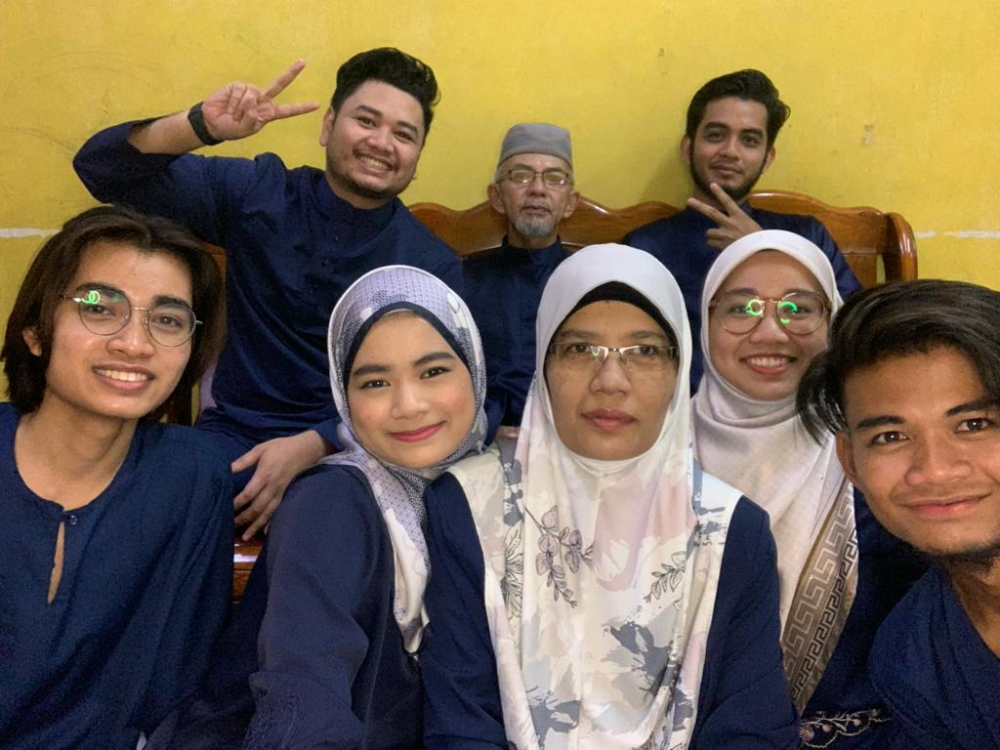
Shahar bin Mat Kilau, my father, was born in Tampin, Negeri Sembilan. His birthday is April 13, 1961. My father is a retired military who works for himself right now. Being the child of a retired military person can create a great feeling of pride and honour, and I am proud of my father for the sacrifices and contributions he had made. There was no better father than him.He constantly gives his kids his full attention. My dad never gave up on his kids. My father is quite skilled at wiring work. Norizan binti Mat Jin, my mother, was born in Melaka. She was born on July 3, 1968. My mother is a housewife purely. There is no better mother than her. Her goal has always been for her kids to succeed in life. She always advises me to put in a lot of study time and earn my diploma on pace. My mum always makes really good food. Nobody is able to defeat. It's one of the reasons I enjoy eating so much. My dad is an excellent parent. They are really very dear to me. My goal is to provide them with the greatest. I don't want to let my parent down. |
|
Introducing my first brother, Muhammad Firdaus.He was born on 25 february 1994. He still single eventhough he is old. My second brother is Muhammad Farid. His birthday is 9 December 1996. He is married and have 2 sons. His wife name is Shahirah binti Zainuddin. Their first son is Muhammad Al-Fateh. He is 4 years old. And Muhammad Ar-Rayyan. he is 3 years old. Currently, my sister in law is pregnant with baby girl. Next, my third brother is Muhammad Faiz. He was born on 4 August 1998. He is engaged and will marry in April 2024. Next is my sister. Her name is Nor Farhana Hanim. She is 23 yeard old. She was born on 11 July 2000. She just graduated and still looking for jobs. She is the best sister I ever had. The fifth, is my brother. Muhammad Fareez Iskandar.He was born on 1 December 2001. He is the best brother cause he always give me money. After him is me, Nur Farah Anis. I am the sixth in my family. Finally, my little brother. His name is Muhammad Fikri Hakimi. He is one year younger than me. He was born on 24 September 2004. Although sometime he is troublesome, he still the best younger brother. So in total, we are family of 13. |
| Photos with family
📸 |
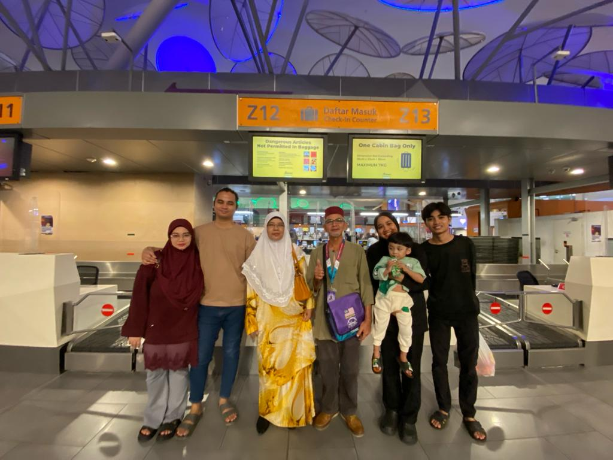
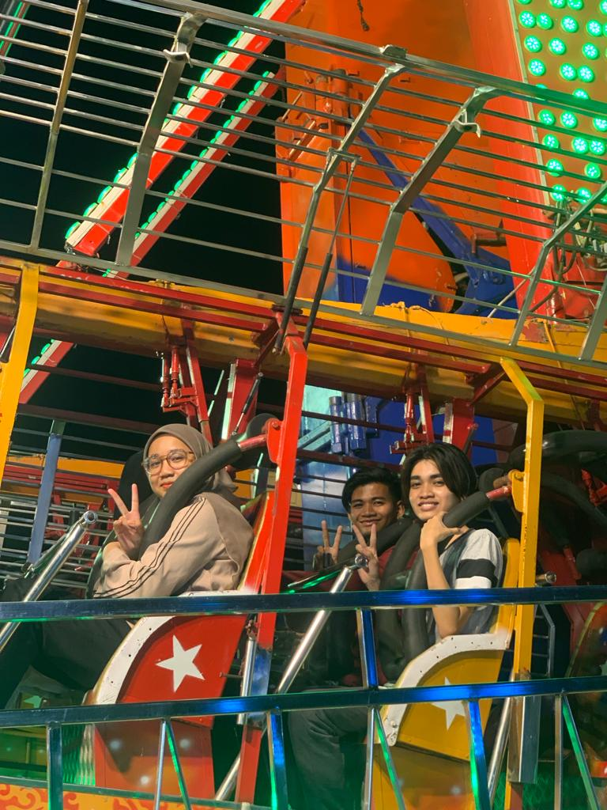
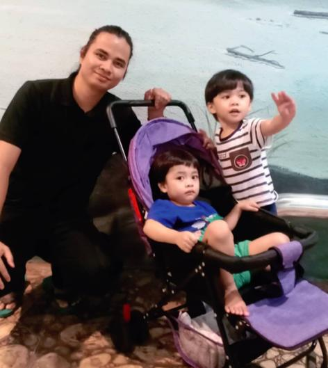
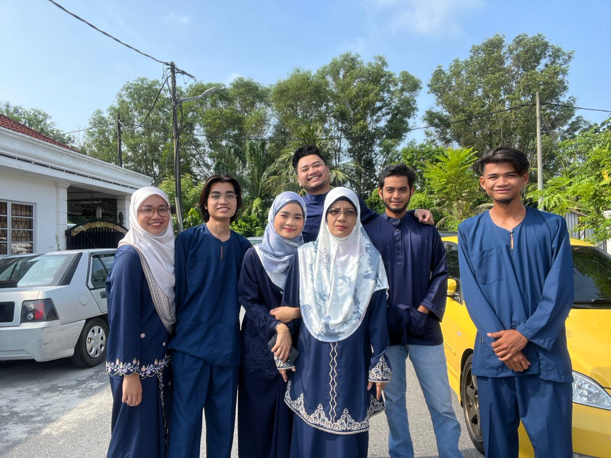
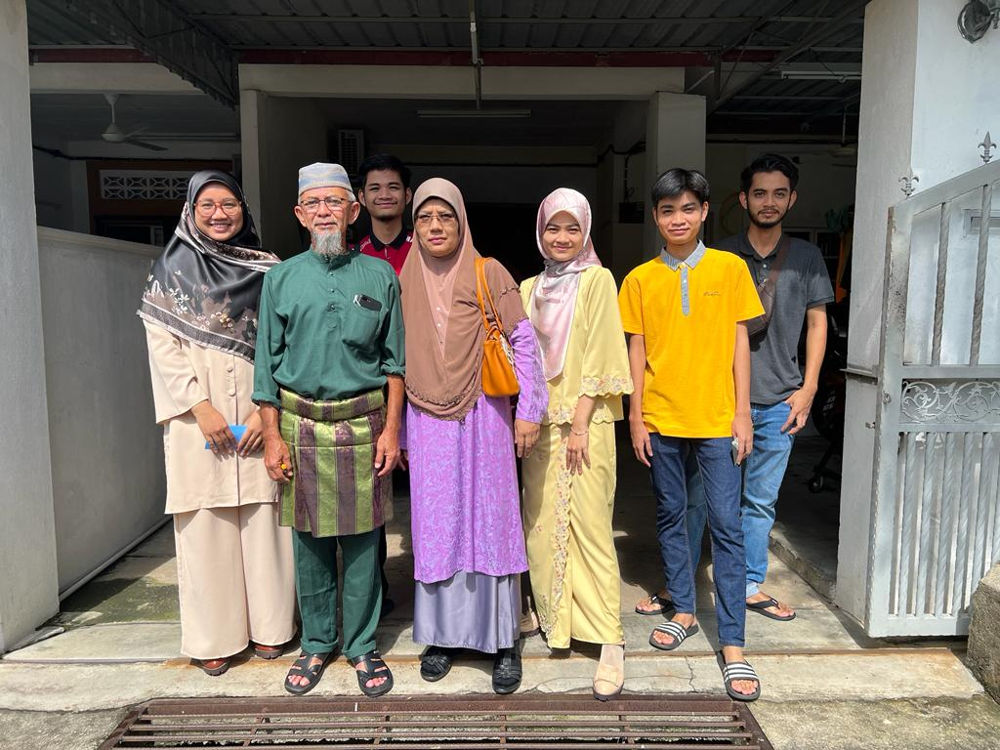
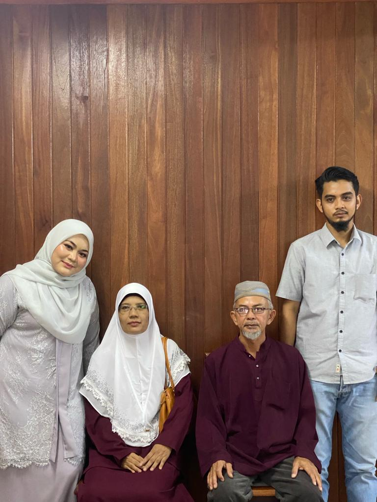
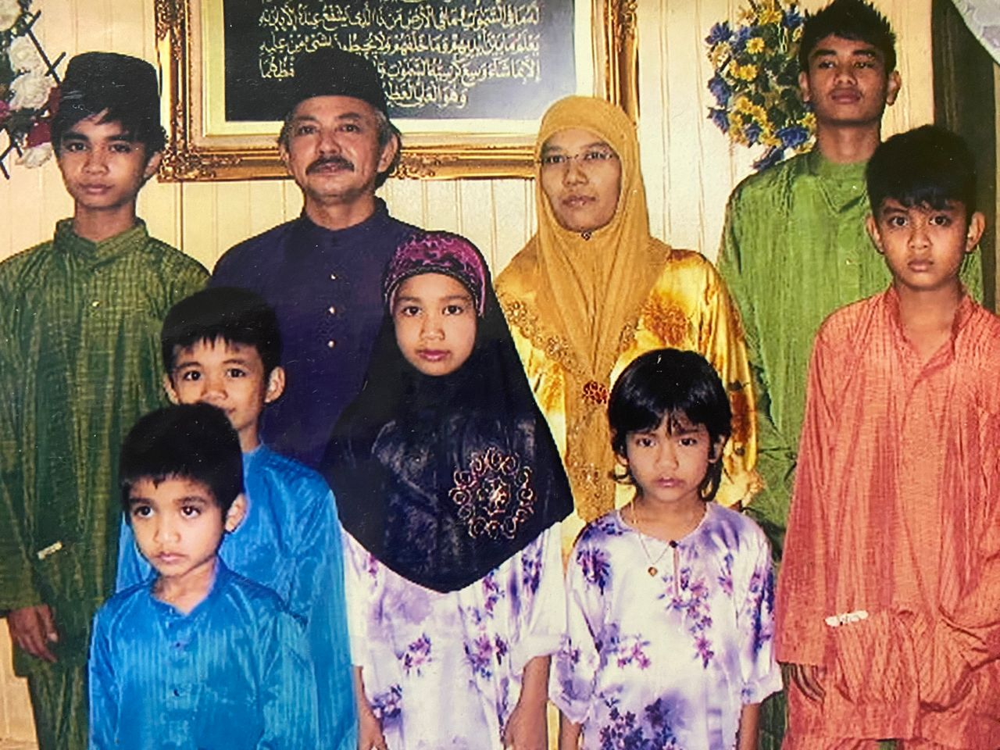 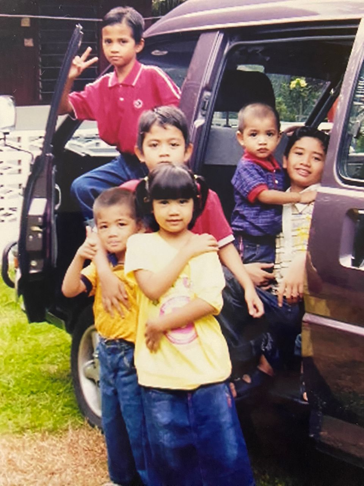 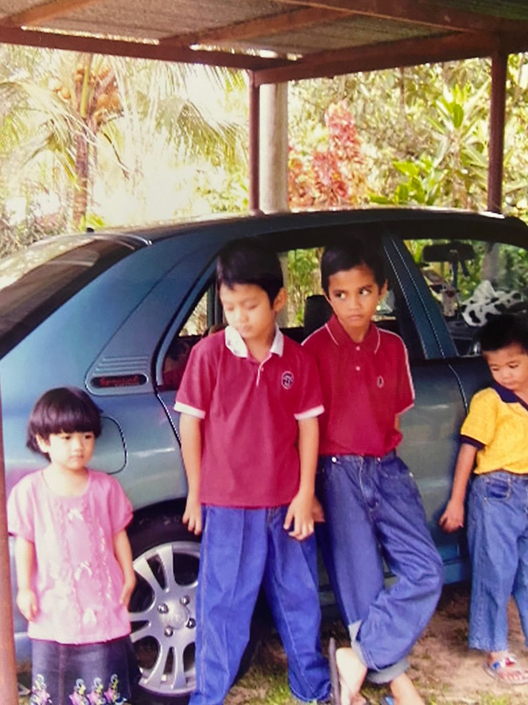 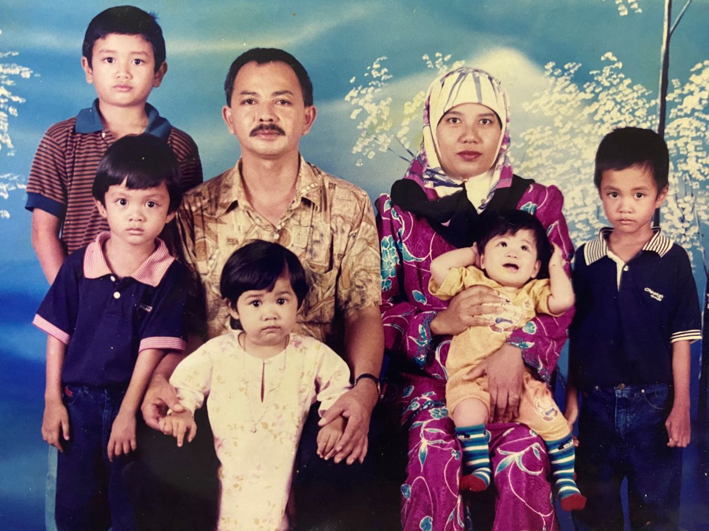 |
|---|